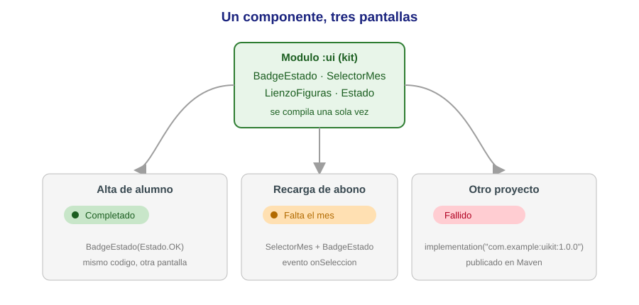
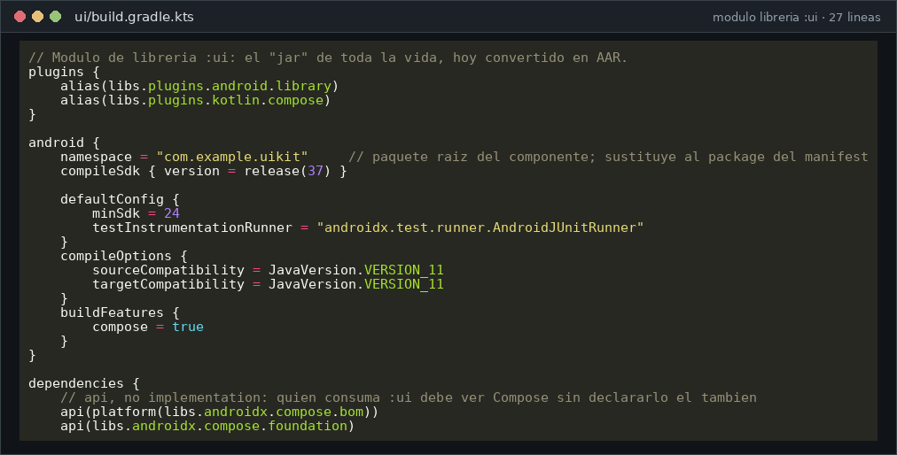
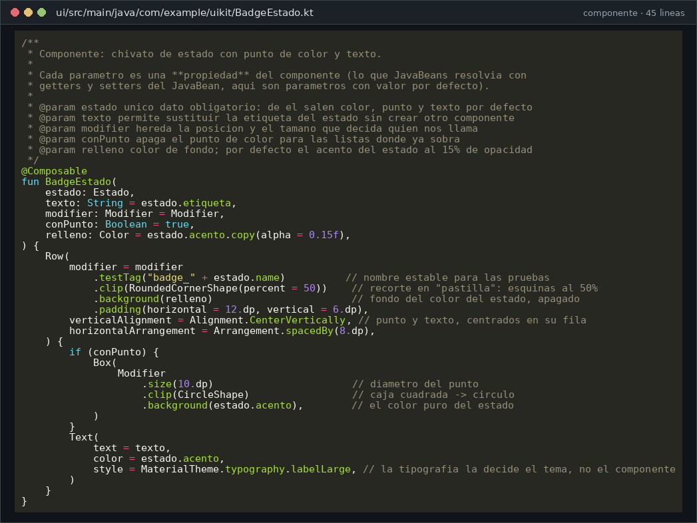
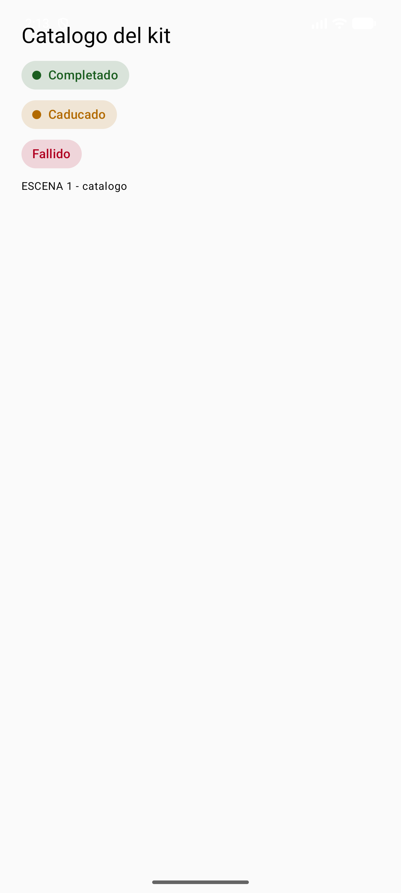
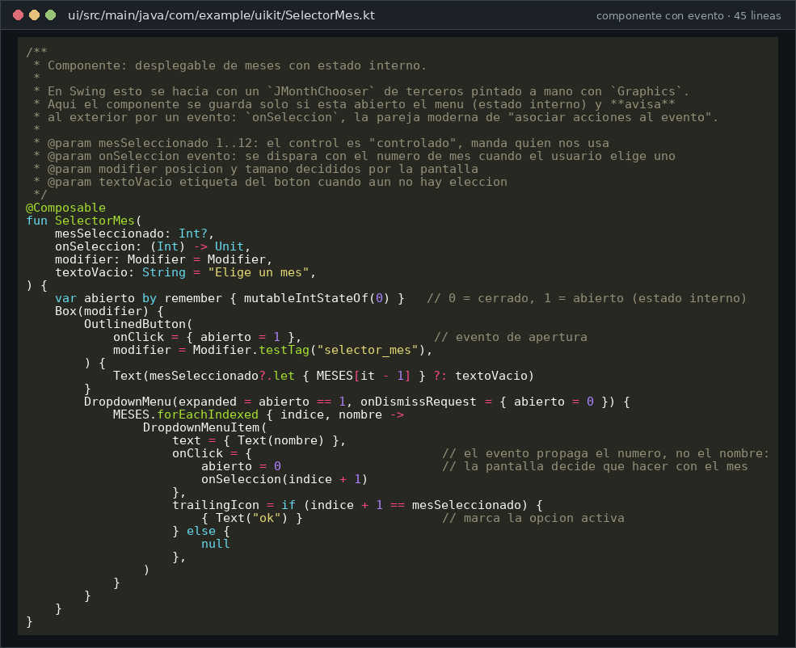
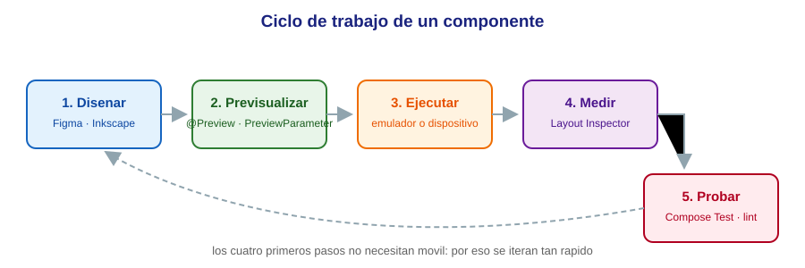
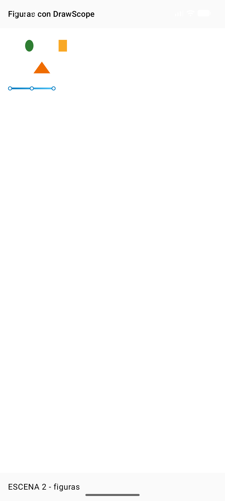
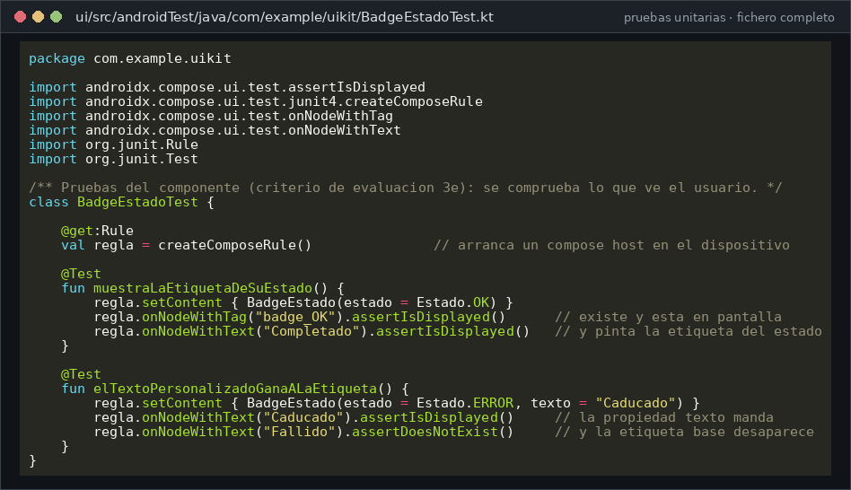

4.1 — Creación de componentes visuales
El trabajo de ingeniería: crear una pieza nueva, darle propiedades, probarla, documentarla y empaquetarla. En Java Swing se resolvía con JavaBeans,
Graphicsy un JAR metido a mano en la paleta de Eclipse. Aquí hacemos exactamente el mismo trabajo de ingeniería —crear una pieza nueva, darle propiedades, probarla, documentarla y empaquetarla para reutilizarla— pero con las herramientas de 2026: Jetpack Compose, un módulo de librería y pruebas instrumentadas.Como en las unidades anteriores, cada bloque marcado como
Código Nes el fichero completo que se compiló y se ejecutó: lo que lees es el código real del proyectoIsmaelUIKit, comentado línea a línea.
Resultado de aprendizaje que trabaja esta unidad
RA3. Crea componentes visuales valorando y empleando herramientas específicas (RD 405/2023, módulo 0488).
| CE | Criterio de evaluación | Dónde se trabaja |
|---|---|---|
| a | Se han identificado las herramientas para diseño y prueba de componentes. | §7 previews, §9 herramientas |
| b | Se han creado componentes visuales. | §6 BadgeEstado, §10 LienzoFiguras |
| c | Se han definido sus métodos y propiedades con asignación de valores por defecto. | §4 y §6, parámetros con defecto |
| d | Se han determinado los eventos a los que debe responder el componente y se les han asociado las acciones correspondientes. | §6.3 SelectorMes, §15 caso del abono |
| e | Se han realizado pruebas unitarias sobre los componentes desarrollados. | §12 BadgeEstadoTest |
| f | Se han documentado los componentes creados. | §13 KDoc y previews |
| g | Se han empaquetado componentes. | §8 módulo :ui y su AAR |
| h | Se han programado aplicaciones cuyo interfaz gráfico utiliza los componentes creados. | app IsmaelUIKit.demo (las tres escenas) |
1. Introducción y contextualización práctica
Hasta ahora has usado componentes: Button, TextField, Card… Los ponías, les cambiabas
propiedades y les conectabas eventos. Este tema da el paso siguiente: fabricar tus propios
componentes, los que la librería estándar no trae, con el mismo rigor con el que un fabricante de
componentes diseña los suyos.

¿Cuándo se crea un componente y no se copia y pega el código? La regla práctica:
- Aparece dos veces en la aplicación con el mismo aspecto → componente.
- Cambia el color, el texto o el tamaño, pero no la estructura → componente con parámetros.
- Lo necesita otro equipo u otro proyecto → componente en un módulo de librería aparte (§8).
Un componente es código probado y reutilizable que se comunica con el resto a través de su interfaz pública: sus parámetros de entrada y sus eventos de salida. Todo lo que no esté en esa interfaz es interno y puede cambiar sin romper a nadie.
2. Desarrollo de software en componentes
El modelo de componentes nació con historia: programar “en componentes” significa ensamblar piezas hechas en vez de escribirlo todo. Las ventajas son siempre las mismas:
| Ventaja | Qué significa en el día a día |
|---|---|
| Reutilización | Escribes la pieza una vez; la usas en todas las pantallas y proyectos. |
| Fiabilidad | El componente ya se probó una vez; no se vuelve a probar desde cero. |
| Coste y plazo | Montar pantallas pasa de “escribir” a “componer”. |
| Consistencia | Si el botón de “aceptar” es uno solo, se ve igual en toda la app. |
| Mantenimiento | Cambiar el verde de “Completado” es tocar una línea, no veinte pantallas. |
Cómo se empaquetaba antes y cómo se empaqueta hoy:
| Concepto clásico (Java/Swing) | Equivalente en 2026 |
|---|---|
Clase JavaBean en un .jar |
@Composable en un módulo de librería Android |
| Añadir el JAR a la paleta de Eclipse | implementation(project(":ui")) en build.gradle.kts |
.jar (solo clases) |
.aar (clases + recursos + manifiesto) |
| “Proyecto de componente” | Módulo :ui dentro del mismo proyecto Gradle, o repositorio aparte |
| Publicarlo a un compañero copiándole el JAR | Publicarlo a un repositorio Maven (Maven Local, GitHub Packages, Artifacts) |
3. Concepto de componente y características
Un componente de interfaz es una pieza de código que dibuja una parte de la pantalla y se comporta de forma predecible. Para que merezca ese nombre, se le piden seis cosas:
- Interfaz pública clara: parámetros con tipos y nombres que se entienden sin leer el interior.
- Valores por defecto sensatos: quien lo usa puede llamarlo con lo mínimo (
BadgeEstado(Estado.OK)). - Sin efectos surprises: no guarda datos “en un sitio raro”, no escribe ficheros, no lanza redes.
- Comunicación por eventos: informa de lo que pasa con lambdas (
onSeleccion), no rebuscando en la pantalla. - Aislado y portable: no depende de una Activity concreta ni de un paquete de la aplicación.
- Documentado y probado: trae explicación, previsualizaciones y al menos una prueba.
En Compose, un componente es una función @Composable. No hay que heredar de ninguna clase base ni
registrarla en ninguna paleta: si es @Composable, el editor la entiende, la previsualiza y Layout
Inspector la muestra.
4. Propiedades y atributos
Definición clásica de componente (JavaBeans, 1997)
Las propiedades de un componente definen los datos públicos que forman la apariencia y el comportamiento del objeto, y se consultan o modifican mediante métodos.
En Java eso se materializaba en el patrón JavaBean: campo privado + getX()/setX(). En Compose las
propiedades son parámetros de la función, y el “valor por defecto” es directamente el valor por
defecto del parámetro:
| Concepto JavaBean | Equivalente Compose | Ejemplo real de esta unidad |
|---|---|---|
Propiedad font con getter/setter |
Parámetro style: TextStyle |
MaterialTheme.typography.labelLarge |
| Valor por defecto en el setter | Valor por defecto del parámetro | texto: String = estado.etiqueta |
| Propiedad opcional booleana | Boolean con defecto |
conPunto: Boolean = true |
| Propiedad de color con cálculo | Expresión en el defecto | relleno = estado.acento.copy(alpha = 0.15f) |
Método paintComponent(...) |
Cuerpo de la @Composable |
El Row { ... } que dibuja la píldora |
Evento con ActionListener |
Parámetro lambda | onSeleccion: (Int) -> Unit |
Tres detalles que se preguntan en el examen y que deciden si un componente es bueno:
modifier: Modifier = ModifierSIEMPRE como primer parámetro opcional: es lo que permite a quien te llama colocar y dar tamaño a tu componente sin tocarte el código.- Un parámetro con valor por defecto es documentación: dice qué es opcional y cuál es el comportamiento normal.
- Si una propiedad se calcula a partir de otra, calcúlala en el defecto (
estado.acento.copy(alpha = 0.15f)) en vez de obligar a quien te llama a repetirlo.
4.1. JavaBean: por qué se menciona y por qué ya no se escribe
La especificación JavaBean dedica un apartado entero a: clase pública con constructor sin argumentos,
que implementa Serializable, con propiedades privadas accesibles por getX()/setX() y eventos por
escucha. Con esas reglas, los componentes se podían instanciar por reflexión desde el editor visual.
De JavaBean nos queda la idea —datos públicos bien definidos, constructor sencillo, comportamiento predecible— y nos sobra la sintaxis: Kotlin convierte cada propiedad en getter/setter automáticamente.
// El mismo dato en las tres generaciones de lenguaje que vas a ver en el ciclo.
// 1) JavaBean clásico: 8 lineas para un solo dato
public class Badge {
private String texto; // propiedad privada
public String getTexto() { return texto; } // getter
public void setTexto(String t) { texto = t; } // setter
}
// 2) Kotlin: la propiedad, el getter y el setter caben en una linea
class Badge { var texto: String = "" }
// 3) Compose: la propiedad es un parametro de la funcion que dibuja
@Composable fun Badge(texto: String = "") { /* ... */ }
Y hay un motivo técnico para el cambio de modelo: en Compose no existe una instancia viva del componente a la que “ponerle” un valor. Cada vez que cambia un dato, la función se vuelve a ejecutar y produce la nueva pantalla. Por eso las propiedades son parámetros de entrada, y las “modificaciones” se devuelven al llamador con un evento.
5. El proyecto donde vive todo el tema
El tema se trabaja en el proyecto IsmaelUIKit, con dos módulos. Esta estructura es el equivalente
moderno al par «módulo de componente + módulo de aplicación»:
flowchart TD
A["modulo :app<br/>com.example.uikit.demo<br/>la aplicacion de ejemplo"] -->|implementation project(:ui)| B["modulo :ui<br/>com.example.uikit<br/>el kit de componentes"]
B --> C["BadgeEstado<br/>pildora de estado"]
B --> D["SelectorMes<br/>desplegable con evento"]
B --> E["LienzoFiguras<br/>dibujo con DrawScope"]
B --> F["Estado<br/>enum con color y texto"]
B --> G["Pruebas: BadgeEstadoTest"]El fichero que declara los módulos (settings.gradle.kts) y la configuración del módulo de librería
son los que hacen hoy de “Añadir a la paleta”:
rootProject.name = "IsmaelUIKit"
include(":app") // la aplicacion de demostracion
include(":ui") // el kit de componentes: aqui viven los componentes creados en clase
// Modulo de libreria :ui: el "jar" de toda la vida, hoy convertido en AAR.
plugins {
alias(libs.plugins.android.library)
alias(libs.plugins.kotlin.compose)
}
android {
namespace = "com.example.uikit" // paquete raiz del componente; sustituye al package del manifest
compileSdk { version = release(37) }
defaultConfig {
minSdk = 24
testInstrumentationRunner = "androidx.test.runner.AndroidJUnitRunner"
}
compileOptions {
sourceCompatibility = JavaVersion.VERSION_11
targetCompatibility = JavaVersion.VERSION_11
}
buildFeatures {
compose = true
}
}
dependencies {
// api, no implementation: quien consuma :ui debe ver Compose sin declararlo el tambien
api(platform(libs.androidx.compose.bom))
api(libs.androidx.compose.foundation)
api(libs.androidx.compose.material3)
api(libs.androidx.compose.ui)
api(libs.androidx.compose.ui.graphics)
implementation(libs.androidx.compose.ui.tooling.preview)
debugImplementation(libs.androidx.compose.ui.tooling)
// Pruebas unitarias del componente (criterio de evaluacion 3e)
androidTestImplementation(platform(libs.androidx.compose.bom))
androidTestImplementation(libs.androidx.compose.ui.test.junit4)
androidTestImplementation(libs.androidx.junit)
androidTestImplementation(libs.androidx.espresso.core)
debugImplementation(libs.androidx.compose.ui.test.manifest)
}

6. Creación de un nuevo componente: BadgeEstado
Empezamos por el caso más simple que cumple todas las reglas: una píldora de estado con un punto de color
y un texto. La ruta clásica era la misma: partir de un componente existente y añadirle lo que le falta
(aquí partimos de Row, Text y Box de Material 3).
6.1. El enum que trae las propiedades puestas
package com.example.uikit
import androidx.compose.ui.graphics.Color
/**
* Los tres estados que sabe representar el kit.
*
* Es un `enum class` con datos: cada valor se construye con las **propiedades** que el
* componente necesita para pintarse. Asi el color y el mensaje viajan *dentro* del estado
* y no repartidos por las pantallas: cambiar el verde de "Completado" es tocar una linea.
*
* @param etiqueta texto que ve el usuario en el componente
* @param acento color de referencia (punto, texto y borde) del estado
* @param mensaje frase larga para los sitios donde el estado se explica, no se solo pinta
*/
enum class Estado(
val etiqueta: String,
val acento: Color,
val mensaje: String,
) {
OK("Completado", Color(0xFF1B5E20L), "Todo en orden"),
AVISO("Revisa", Color(0xFFB26A00L), "Hay algo que conviene mirar"),
ERROR("Fallido", Color(0xFFB00020L), "Algo no ha funcionado"),
}
6.2. El componente
Código 1. Fichero completo de BadgeEstado, incluido su @Preview. Es el código que produjo la
Figura 4.
package com.example.uikit
import androidx.compose.foundation.background
import androidx.compose.foundation.layout.Arrangement
import androidx.compose.foundation.layout.Box
import androidx.compose.foundation.layout.Row
import androidx.compose.foundation.layout.padding
import androidx.compose.foundation.layout.size
import androidx.compose.foundation.shape.CircleShape
import androidx.compose.foundation.shape.RoundedCornerShape
import androidx.compose.material3.MaterialTheme
import androidx.compose.material3.Text
import androidx.compose.runtime.Composable
import androidx.compose.ui.Alignment
import androidx.compose.ui.Modifier
import androidx.compose.ui.draw.clip
import androidx.compose.ui.graphics.Color
import androidx.compose.ui.platform.testTag
import androidx.compose.ui.tooling.preview.Preview
import androidx.compose.ui.unit.dp
/**
* Componente: chivato de estado con punto de color y texto.
*
* Cada parametro es una **propiedad** del componente (lo que JavaBeans resolvia con
* getters y setters del JavaBean, aqui son parametros con valor por defecto).
*
* @param estado unico dato obligatorio: de el salen color, punto y texto por defecto
* @param texto permite sustituir la etiqueta del estado sin crear otro componente
* @param modifier hereda la posicion y el tamano que decida quien nos llama
* @param conPunto apaga el punto de color para las listas donde ya sobra
* @param relleno color de fondo; por defecto el acento del estado al 15% de opacidad
*/
@Composable
fun BadgeEstado(
estado: Estado,
texto: String = estado.etiqueta,
modifier: Modifier = Modifier,
conPunto: Boolean = true,
relleno: Color = estado.acento.copy(alpha = 0.15f),
) {
Row(
modifier = modifier
.testTag("badge_" + estado.name) // nombre estable para las pruebas
.clip(RoundedCornerShape(percent = 50)) // recorte en "pastilla": esquinas al 50%
.background(relleno) // fondo del color del estado, apagado
.padding(horizontal = 12.dp, vertical = 6.dp),
verticalAlignment = Alignment.CenterVertically, // punto y texto, centrados en su fila
horizontalArrangement = Arrangement.spacedBy(8.dp),
) {
if (conPunto) {
Box(
Modifier
.size(10.dp) // diametro del punto
.clip(CircleShape) // caja cuadrada -> circulo
.background(estado.acento), // el color puro del estado
)
}
Text(
text = texto,
color = estado.acento,
style = MaterialTheme.typography.labelLarge, // la tipografia la decide el tema, no el componente
)
}
}
/** Documentacion viva: la propia pantalla de diseno ensena como se ve el componente. */
@Preview(name = "BadgeEstado · tres estados", showBackground = true)
@Composable
private fun VistaPreviaBadge() {
Row(horizontalArrangement = Arrangement.spacedBy(8.dp)) {
BadgeEstado(estado = Estado.OK)
BadgeEstado(estado = Estado.AVISO)
BadgeEstado(estado = Estado.ERROR, conPunto = false)
}
}


Fíjate en lo que no hace el componente: no sabe en qué pantalla está, no sabe qué idioma habla, no crea estado propio. Un componente sin estado propio es más fácil de reutilizar: el estado lo decide quien lo usa, y el componente solo dibuja lo que le cuentan.
6.3. Un componente con evento: SelectorMes
En Swing se compraba un JMonthChooser de terceros y se añadía a la paleta. Nosotros lo escribimos: el
desplegable de meses es el mismo componente, con la diferencia de que devuelve información a la
pantalla.
Código 2. Fichero completo, con sus dos @Preview. El botón «Elige un mes» de la Figura 8 lo pinta este código.
package com.example.uikit
import androidx.compose.foundation.layout.Box
import androidx.compose.material3.DropdownMenu
import androidx.compose.material3.DropdownMenuItem
import androidx.compose.material3.OutlinedButton
import androidx.compose.material3.Text
import androidx.compose.runtime.Composable
import androidx.compose.runtime.getValue
import androidx.compose.runtime.mutableIntStateOf
import androidx.compose.runtime.remember
import androidx.compose.runtime.setValue
import androidx.compose.ui.Modifier
import androidx.compose.ui.platform.testTag
import androidx.compose.ui.tooling.preview.Preview
/** Los doce meses: la lista es una propiedad mas, se puede sustituir por otro calendario. */
val MESES = listOf(
"Enero", "Febrero", "Marzo", "Abril", "Mayo", "Junio",
"Julio", "Agosto", "Septiembre", "Octubre", "Noviembre", "Diciembre",
)
/**
* Componente: desplegable de meses con estado interno.
*
* En Swing esto se hacia con un `JMonthChooser` de terceros pintado a mano con `Graphics`.
* Aqui el componente se guarda solo si esta abierto el menu (estado interno) y **avisa**
* al exterior por un evento: `onSeleccion`, la pareja moderna de "asociar acciones al evento".
*
* @param mesSeleccionado 1..12: el control es "controlado", manda quien nos usa
* @param onSeleccion evento: se dispara con el numero de mes cuando el usuario elige uno
* @param modifier posicion y tamano decididos por la pantalla
* @param textoVacio etiqueta del boton cuando aun no hay eleccion
*/
@Composable
fun SelectorMes(
mesSeleccionado: Int?,
onSeleccion: (Int) -> Unit,
modifier: Modifier = Modifier,
textoVacio: String = "Elige un mes",
) {
var abierto by remember { mutableIntStateOf(0) } // 0 = cerrado, 1 = abierto (estado interno)
Box(modifier) {
OutlinedButton(
onClick = { abierto = 1 }, // evento de apertura
modifier = Modifier.testTag("selector_mes"),
) {
Text(mesSeleccionado?.let { MESES[it - 1] } ?: textoVacio)
}
DropdownMenu(expanded = abierto == 1, onDismissRequest = { abierto = 0 }) {
MESES.forEachIndexed { indice, nombre ->
DropdownMenuItem(
text = { Text(nombre) },
onClick = { // el evento propaga el numero, no el nombre:
abierto = 0 // la pantalla decide que hacer con el mes
onSeleccion(indice + 1)
},
trailingIcon = if (indice + 1 == mesSeleccionado) {
{ Text("ok") } // marca la opcion activa
} else {
null
},
)
}
}
}
}
@Preview(name = "SelectorMes · sin elegir", showBackground = true)
@Composable
private fun VistaPreviaSelectorVacio() {
SelectorMes(mesSeleccionado = null, onSeleccion = {})
}
@Preview(name = "SelectorMes · con eleccion", showBackground = true)
@Composable
private fun VistaPreviaSelectorElegido() {
SelectorMes(mesSeleccionado = 3, onSeleccion = {})
}

Dos estados, dos previsualizaciones. Es la costumbre que separa un componente bien hecho de uno
aceptable: todo componente con aspecto distinto según su estado trae un @Preview por estado. Cuando
los estados dependen de una lista de datos, se usa @PreviewParameter y un proveedor:
class ProveedorEstado : PreviewParameterProvider<Estado> {
override val values: Sequence<Estado> = sequenceOf(Estado.OK, Estado.AVISO, Estado.ERROR)
}
@Preview(name = "BadgeEstado · parametrizado")
@Composable
private fun VistaPreviaParametrizada(@PreviewParameter(ProveedorEstado::class) estado: Estado) {
BadgeEstado(estado = estado) // el editor genera una fila por cada valor de la lista
}
7. Herramientas para diseñar y probar componentes (CE a)
La comparación de editores de imágenes (Photoshop, GIMP, Paint.NET, Inkscape) es de manual. Esas siguen: se usan para crear el material gráfico. Para diseñar y probar el componente en sí, las de 2026 son estas:
| Herramienta | Qué hace | Cuándo se usa |
|---|---|---|
@Preview y sus variantes |
Dibuja el componente en el editor, sin arrancar el móvil. | Cada vez que cambias una propiedad. |
@PreviewParameter |
Genera una preview por cada valor de prueba. | Componentes con estados o listas. |
@Preview(uiMode = Configuration.UI_MODE_NIGHT_YES) |
Preview en tema oscuro. | Comprobar contraste sin tocar el móvil. |
| Layout Inspector | Árbol real de la interfaz: medidas, colores, orden de composición. | Cuando algo no se ve donde debía. |
Compose Testing (createComposeRule) |
Busca nodos por testTag o texto y comprueba lo que se ve. |
Pruebas automáticas (CE e). |
lint / Detekt |
Avisos de estilo y errores típicos de Compose. | En el build y en la CI. |
| Figma, Inkscape, vector asset studio | Material gráfico (iconos, logos) que se convierte a ImageVector. |
Antes de escribir el componente. |

8. Integración y empaquetado del componente (CE g)
En Java se empaquetaba en un .jar y se añadía a la paleta. Aquí el paquete es un módulo de librería y
la “paleta” es el dependencies de Gradle:
- Módulo
:uiconcom.android.library: produce un.aar(Android Archive), que a diferencia del.jartambién lleva recursos, drawables y su manifiesto. - Quien consume el kit escribe
implementation(project(":ui"))y ya tiene sus componentes: no copia ficheros y no pega el código. - Dentro del módulo, las dependencias se declaran con
apiy no conimplementation:apifiltra la dependencia a quien te usa,implementationla esconde. Un kit de UI usaapipara Compose, porque quien consume el componente también compila contra Compose. - Para compartirlo con otro proyecto se publica a un repositorio Maven:
plugins {
id("maven-publish") // plugin de publicacion de Gradle
}
publishing {
publications {
create<MavenPublication>("release") {
groupId = "com.example" // se escribe a mano: es tu "marca"
artifactId = "uikit" // nombre del paquete
version = "1.0.0" // versionado semantico: mayor.menor.parche
from(components["release"]) // el AAR ya construido por el modulo
}
}
}
// Orden: ./gradlew :ui:publishToMavenLocal
// Y en el otro proyecto: implementation("com.example:uikit:1.0.0")
Comprobación de que el empaquetado es real: el build genera dos artefactos.
$ ./gradlew :app:assembleDebug :ui:assembleDebugAndroidTest
> Task :ui:compileDebugKotlin
> Task :app:processDebugResources
BUILD SUCCESSFUL in 33s
app/build/outputs/apk/debug/app-debug.apk
ui/build/outputs/apk/androidTest/debug/ui-debug-androidTest.apk
9. Dibujar sobre la interfaz: Graphics → DrawScope (CE b)
java.awt.Graphics (1996) sigue siendo la idea de referencia: un lienzo, un color, coordenadas y figuras.
En Compose ese lienzo se llama DrawScope y está disponible dentro de Canvas { } o de
Modifier.drawBehind { }.
Java Graphics |
Compose DrawScope |
Notas |
|---|---|---|
paint(Graphics g) sobre escrito |
Canvas { ... } / Modifier.drawBehind { ... } |
No hay update() ni repaint(): al cambiar el estado se vuelve a dibujar. |
g.setColor(Color.green) |
color = Color(0xFF2E7D32L) en cada figura |
El color es un argumento, no un estado del pincel. |
g.fillOval(150, 70, 50, 70) |
drawOval(color, topLeft = Offset(150f, 70f), size = Size(50f, 70f)) |
Mismas coordenadas, mismo resultado. |
g.fillRect(350, 70, 50, 70) |
drawRect(color, topLeft = Offset(350f, 70f), size = Size(50f, 70f)) |
Ídem. |
g.fillPolygon(xs, ys, 3) |
Path().apply { moveTo(); lineTo(); close() } + drawPath(...) |
El polígono se construye con un Path. |
g.drawImage(img, x, y, this) |
drawImage(image, offset, alpha) |
Ver apartado 11. |
Stroke/pluma gruesa |
style = Stroke(width = 10f, cap = StrokeCap.Round) |
Trazos redondeados y degradados con Brush. |
Código 3. Fichero completo del componente de dibujo. Es el código que produjo la Figura 7.
package com.example.uikit
import androidx.compose.foundation.Canvas
import androidx.compose.foundation.background
import androidx.compose.foundation.layout.fillMaxSize
import androidx.compose.runtime.Composable
import androidx.compose.ui.Modifier
import androidx.compose.ui.geometry.Offset
import androidx.compose.ui.geometry.Size
import androidx.compose.ui.graphics.Brush
import androidx.compose.ui.graphics.Color
import androidx.compose.ui.graphics.Path
import androidx.compose.ui.graphics.StrokeCap
import androidx.compose.ui.graphics.drawscope.Stroke
import androidx.compose.ui.tooling.preview.Preview
/**
* Componente: las figuras clasicas de `java.awt.Graphics`, dibujadas con `DrawScope`.
*
* `Graphics` (AWT, 1996) se sustituye por el bloque de dibujo de Compose: dentro de `Canvas`
* tienes un `DrawScope` con las mismas operaciones de siempre y coordenadas en pixeles.
* Mismas cifras que el ejercicio clasico de AWT: ovalo verde en (150, 70) de 50x70,
* rectangulo amarillo en (350, 70) de 50x70 y triangulo naranja debajo.
*/
@Composable
fun LienzoFiguras(modifier: Modifier = Modifier) {
Canvas(modifier.fillMaxSize().background(Color.White)) {
// 1. Ovalo: caja imaginaria de 50x70 en (150, 70) -> drawOval, el `fillOval` de AWT
drawOval(
color = Color(0xFF2E7D32L),
topLeft = Offset(150f, 70f),
size = Size(50f, 70f),
)
// 2. Rectangulo relleno: mismo tamano, 200 px mas a la derecha
drawRect(
color = Color(0xFFF9A825L),
topLeft = Offset(350f, 70f),
size = Size(50f, 70f),
)
// 3. Triangulo: el `fillPolygon` de AWT se construye con un Path de tres vertices
val triangulo = Path().apply {
moveTo(250f, 200f)
lineTo(300f, 270f)
lineTo(200f, 270f)
close() // cierra el vertice con el origen
}
drawPath(triangulo, color = Color(0xFFEF6C00L))
// 4. Y una linea de metro: trazo redondeado con degradado y estaciones en blanco
val via = Path().apply {
moveTo(60f, 360f)
lineTo(320f, 360f)
}
drawPath(
path = via,
brush = Brush.linearGradient(
colors = listOf(Color(0xFF0277BDL), Color(0xFF4FC3F7L)),
start = Offset(60f, 360f),
end = Offset(320f, 360f),
),
style = Stroke(width = 10f, cap = StrokeCap.Round),
)
listOf(60f, 190f, 320f).forEach { x -> // estaciones: circulos con borde
drawCircle(color = Color.White, radius = 10f, center = Offset(x, 360f))
drawCircle(
color = Color(0xFF0277BDL),
radius = 10f,
center = Offset(x, 360f),
style = Stroke(width = 4f),
)
}
}
}
@Preview(name = "LienzoFiguras", showBackground = true, widthDp = 380, heightDp = 420)
@Composable
private fun VistaPreviaLienzo() {
LienzoFiguras()
}

10. Imágenes en el componente
En AWT se cargaban imágenes con paint porque los contenedores no tenían fondo por URL. Hoy separamos tres
casos y cada uno tiene su herramienta:
| Caso | Cómo se hace | Claves |
|---|---|---|
| Icono o logotipo vectorial del componente | ImageVector (creado desde SVG, tema 3) o vector asset studio |
Escala sin pixelar y pesa cientos de bytes. |
| Imagen incluida en el paquete (PNG, WebP) | painterResource(R.drawable.nombre) dentro de Image(...) |
Vive en el módulo: va dentro del .aar. |
| Imagen remota (la que AWT cargaba por URL) | librería de carga asíncrona (Coil AsyncImage, o Fresco) |
Ocupa el hueco mientras carga y muestra un error si falla. |
@Composable
fun CabeceraConLogo(modifier: Modifier = Modifier, urlLogo: String? = null) {
Row(modifier.padding(16.dp), verticalAlignment = Alignment.CenterVertically) {
if (urlLogo == null) {
Image( // 1 y 2: imagen que viaja en el paquete
painter = painterResource(R.drawable.ic_logo),
contentDescription = "Logo de la aplicación", // obligatoria: la lee el lector de pantalla
modifier = Modifier.size(40.dp),
)
} else {
AsyncImage( // 3: imagen remota (Coil)
model = urlLogo,
contentDescription = "Logo de la aplicación",
placeholder = painterResource(R.drawable.ic_hueco), // hueco mientras carga
error = painterResource(R.drawable.ic_error), // y aviso si falla
modifier = Modifier.size(40.dp),
)
}
Spacer(Modifier.width(12.dp))
Text("Recarga del abono", style = MaterialTheme.typography.titleMedium)
}
}
Accesibilidad de las imágenes
contentDescription = null es correcto solo en imágenes decorativas. En cuanto la imagen informa
de algo (un estado, un precio, un avatar), el texto es obligatorio: sin él el componente no pasa una
revisión de accesibilidad, y accesibilidad se evalúa en RA4.
11. Caso práctico 1: “Interfaz del metro” (adaptado)
Enunciado del caso práctico. La Red de Transporte Regional quiere una pantalla para recargar el abono mensual. Hace falta un desplegable con los doce meses y que la interfaz confirme la recarga elegida.
Montaje con el kit. La pantalla no dibuja nada “a mano”: compone piezas del módulo :ui.
/** Escena 3: caso practico 1 (recarga de abono). El evento del componente alimenta la pantalla. */
@Composable
private fun EscenaAbono() {
var mes by remember { mutableStateOf<Int?>(null) } // estado de la PANTALLA, no del componente
Column(
modifier = Modifier.fillMaxSize().verticalScroll(rememberScrollState()).padding(24.dp),
verticalArrangement = Arrangement.spacedBy(16.dp),
) {
Text("Recarga del abono", style = MaterialTheme.typography.headlineSmall)
SelectorMes( // componente del kit: no sabe nada de abonos
mesSeleccionado = mes,
onSeleccion = { elegido -> mes = elegido }, // el evento sube el numero de mes
)
Card(modifier = Modifier.fillMaxWidth()) {
Column(
modifier = Modifier.padding(16.dp),
verticalArrangement = Arrangement.spacedBy(8.dp),
) {
Text(
if (mes == null) "Selecciona el mes que quieres recargar"
else "Recargado: ${com.example.uikit.MESES[mes!! - 1]} · 20,00 EUR",
)
BadgeEstado(
estado = if (mes == null) Estado.AVISO else Estado.OK,
texto = if (mes == null) "Falta el mes" else Estado.OK.etiqueta,
)
}
}
Text("ESCENA 3 - abono")
}
}
El detalle con nota: el componente no sabe qué es un abono. SelectorMes solo sabe de meses; la
lógica del precio y de la confirmación es de la pantalla. Ese reparto es lo que permite reutilizar el
desplegable en una cita médica, una reserva o un formulario de matrícula.
12. Pruebas unitarias del componente (CE e)
Una prueba de un componente no comprueba “que el código se ejecuta”, sino que el usuario ve lo correcto.
En Compose se hace con createComposeRule: se monta el componente, se busca por su testTag o por su
texto y se afirma sobre lo visible.
Código 4. Fichero de pruebas, ejecutado sobre el emulador.
package com.example.uikit
import androidx.compose.ui.test.assertIsDisplayed
import androidx.compose.ui.test.junit4.createComposeRule
import androidx.compose.ui.test.onNodeWithTag
import androidx.compose.ui.test.onNodeWithText
import org.junit.Rule
import org.junit.Test
/** Pruebas del componente (criterio de evaluacion 3e): se comprueba lo que ve el usuario. */
class BadgeEstadoTest {
@get:Rule
val regla = createComposeRule() // arranca un compose host en el dispositivo
@Test
fun muestraLaEtiquetaDeSuEstado() {
regla.setContent { BadgeEstado(estado = Estado.OK) }
regla.onNodeWithTag("badge_OK").assertIsDisplayed() // existe y esta en pantalla
regla.onNodeWithText("Completado").assertIsDisplayed() // y pinta la etiqueta del estado
}
@Test
fun elTextoPersonalizadoGanaALaEtiqueta() {
regla.setContent { BadgeEstado(estado = Estado.ERROR, texto = "Caducado") }
regla.onNodeWithText("Caducado").assertIsDisplayed() // la propiedad texto manda
regla.onNodeWithText("Fallido").assertDoesNotExist() // y la etiqueta base desaparece
}
}

INSTRUMENTATION_RESULT: stream=...
com.example.uikit.BadgeEstadoTest:..
Time: 1.461
OK (2 tests)
Cómo leer la salida de las pruebas
El .. después del nombre de la clase son las dos pruebas: cada letra es una prueba que pasó; una
F sería un fallo. Que Fallido (la etiqueta por defecto del estado ERROR) no aparezca cuando
se le sustituye el texto es la prueba de que la propiedad funciona: es más útil afirmar la ausencia
que contar píxeles.
13. Documentar componentes (CE f)
Tres niveles, y los dos primeros no cuestan trabajo porque ya los estás escribiendo:
- KDoc en la declaración (
/** ... */con@param): es la ayuda que ve quien usa el componente al escribir, en el autocompletado. Por eso el Código 1 documenta cada propiedad. 2. Previews como documentación viva: un@Previewpor estado vale más que un párrafo; el editor las pinta sin compilar la aplicación. - Documentación publicada: con el plugin Dokka los KDoc se exportan a HTML o Markdown, igual que Javadoc/Javadoc.io en el mundo Java.
/**
* Componente: chivato de estado con punto de color y texto.
*
* Cada parametro es una **propiedad** del componente...
*
* @param estado unico dato obligatorio: de el salen color, punto y texto por defecto
* @param texto permite sustituir la etiqueta del estado sin crear otro componente
* @param conPunto apaga el punto de color para las listas donde ya sobra
*/
14. Caso práctico 2: “Formas básicas con DrawScope” (adaptado)
En Swing había que sobrescribir paint, llamar a super.paint(g) y encadenar setColor + fillOval +
fillRect + fillPolygon. Aquí el equivalente es el Código 3 de esta unidad, con las mismas cifras:
| Paso en Swing | Paso en Compose |
|---|---|
1. Sobrescribir paint |
Abrir el bloque Canvas { } (o Modifier.drawBehind). |
2. Llamar al paint de la superclase |
No hace falta: el fondo se pone con Modifier.background(Color.White). |
3-4. Verde y fillOval(150, 70, 50, 70) |
drawOval(Color(0xFF2E7D32L), Offset(150f, 70f), Size(50f, 70f)). |
5-6. Amarillo y fillRect(350, 70, 50, 70) |
drawRect(Color(0xFFF9A825L), Offset(350f, 70f), Size(50f, 70f)). |
7-8. Naranja y fillPolygon |
Path de tres vértices + drawPath(...) (en el Código 3, triángulo). |
Resultado: la Figura 7 de esta página, ejecutada en el emulador.
15. Errores típicos al crear componentes
| Error | Síntoma | Solución |
|---|---|---|
No aceptar modifier |
El llamador no puede colocar tu componente; se pone donde tú quisiste. | Primer parámetro opcional: modifier: Modifier = Modifier y aplicarlo al contenedor raíz. |
Meter padding “porque queda bien” |
El componente se descoloca al cambiar de pantalla. | El espacio exterior lo pone el modifier del llamador; dentro usa Arrangement.spacedBy. |
| Guardar estado que no es tuyo | El componente “se acuerda” de cosas y se contradice al girar la pantalla. | Estado interno solo para lo interno (si el menú está abierto). Lo demás, parámetro + evento. |
implementation donde toca api |
Quien usa el kit tiene que volver a declarar Compose. | api para lo que forma parte de la interfaz pública del componente. |
Sin testTag |
Las pruebas van buscando textos que cambian con el idioma. | testTag estables + afirmaciones por etiqueta y, solo de apoyo, por texto. |
| Depender de una clase de la app | El módulo :ui no compila solo. |
El kit no importa nada de :app; si hace falta, se pasa como parámetro. |
16. Resumen
- Componente = pieza de código reutilizable con interfaz pública: parámetros de entrada, eventos de salida. En Compose un componente es una función
@Composable: no hay clase base que heredar ni paleta en la que registrarlo. - Propiedades = parámetros, y los valores por defecto sustituyen a los setters con defecto del JavaBean.
modifier: Modifier = Modifiersiempre, para que decida el llamador. - Diseño y prueba sin móvil:
@Preview,@PreviewParameter,uiMode, Layout Inspector. Y prueba automática concreateComposeRule, afirmando sobre lo visible. - Dibujar a mano sigue existiendo:
Canvas { }yDrawScopeson la versión actual deGraphics(óvalo, rectángulo,Path, trazos y degradados). - Imágenes:
ImageVectordesde SVG (tema 3),painterResourcepara lo empaquetado, carga asíncrona para lo remoto, ycontentDescriptionen todo lo que informe de algo. - Empaquetar: módulo de librería →
.aar→implementation(project(":ui"))o publicación Maven.apifiltra la dependencia a quien te usa;implementationla esconde. - Documentar: KDoc en cada propiedad + un
@Previewpor estado + Dokka si hay que publicarlo.
Bibliografía y fuentes
Todo el material se apoya en las especificaciones y documentaciones oficiales del software que se usa en clase.
Documentación oficial de Android y de las herramientas
- Android Developers. Jetpack Compose — documentación principal. https://developer.android.com/develop/ui/compose
- Android Developers. Crear composables y pasar datos (parametros, slots,
Modifier). https://developer.android.com/develop/ui/compose/tutorial - Android Developers.
@Previewhttps://developer.android.com/develop/ui/compose/tooling/previews y Layout Inspector https://developer.android.com/studio/debug/layout-inspector - Android Developers. Pruebas de interfaz con Compose Testing. https://developer.android.com/develop/ui/compose/testing
- Android Developers. Dibujo con
DrawScopeyModifier.drawBehind. https://developer.android.com/develop/ui/compose/graphics/draw - Android Developers. Gráficos vectoriales (vector drawables) e imágenes. https://developer.android.com/develop/ui/views/graphics/vector-drawable-resources
- Android Developers. Módulos de librería y formatos AAR. https://developer.android.com/studio/projects/android-library
- Android Developers. Dependencias de la declaración de proyectos de Gradle (
apifrente aimplementation). https://developer.android.com/build/gradle-dependency-catalog - Gradle. Publicación de componentes (plugin
maven-publish). https://docs.gradle.org/current/userguide/publishing_maven.html - JetBrains. Dokka, generación de documentación Kotlin. https://kotlinlang.org/docs/dokka-introduction.html
- Kotlin Foundation. Enumerations y Properties and accessors. https://kotlinlang.org/docs/enums.html
Espejo histórico: vocabulario de Swing y su equivalente actual
- Oracle. JavaBeans Focus Guide (especificación JavaBeans). https://docs.oracle.com/javase/tutorial/javabeans/
- Oracle. Clase
java.awt.Graphics(API de Java SE). https://docs.oracle.com/en/java/javase/21/docs/api/java.desktop/java/awt/Graphics.html
Normativa del módulo
- Real Decreto 405/2023, de 29 de mayo (BOE-A-2023-13221). Módulo profesional 0488 Desarrollo de interfaces: RA3 y sus criterios de evaluación a) a h), que son los que ordenan este tema.